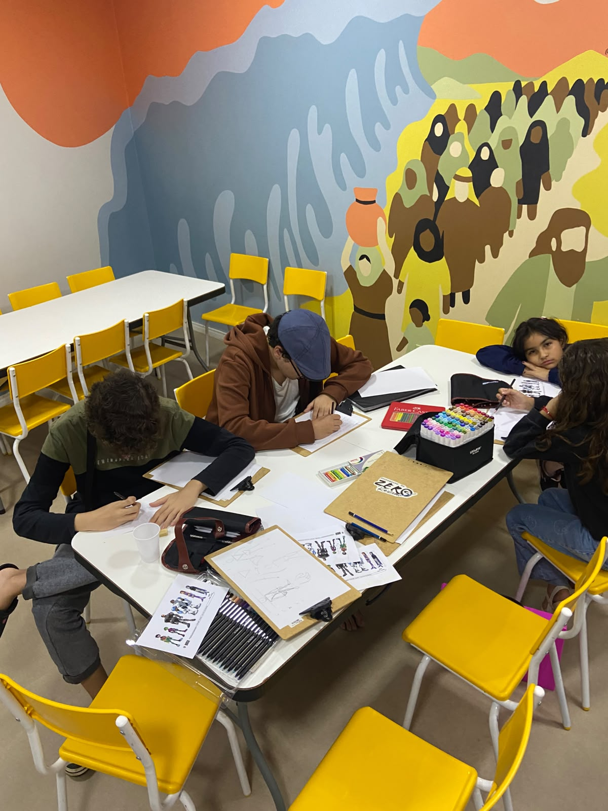

Vídeos soltos na internet fazem você perder horas sem saber por onde começar.
Escola de Arte & Ilustração
|
O que ninguém conta sobre aprender arte sozinho.
Tentar o avançado sem a base cria vícios de desenho difíceis de corrigir.
Sem um método claro, a falta de evolução faz você estagnar e desistir.
O problema não é a falta de talento. É a falta de um caminho organizado.
Nankim — Onde o seu sonho ganha traço.
Aqui transformamos a vontade em evolução real através de uma jornada estruturada e sem rodeios.
DISPONÍVEL AGORA
Etapa 1
Fundamentos do Desenho
Formas, estrutura, luz e sombra. A base essencial para desenhar com segurança.
🔒 EM BREVE
Etapa 2
Anatomia Humana & Dinâmica
Proporções, musculatura e movimento para dar vida às suas criações.
🔒 EM BREVE
Etapa 3
Especialização Profissional
Pintura digital, cor e acabamento de alto nível voltados para o mercado.
MÓDULO 1
100% GRÁTIS
Experimente o método Nankim antes de decidir.
- Acesse gratuitamente as primeiras aulas da Etapa de Fundamentos.
- Veja como uma estrutura de ensino organizada transforma sua percepção.
- Prática no desenho logo no primeiro contato.
Onde o método Nankim pode te levar
Conheça histórias de ex-alunos mentorados pelo Thiago que construíram bases sólidas e atingiram o mercado profissional.
Lucas Moura
Concept Artist Ex-Aluno do Thiago"A base sólida de fundamentos que aprendi com a metodologia do Thiago foi o divisor de águas para minha vaga internacional."
Mariana Silva
Ilustradora Senior Ex-Aluna do Thiago"O método me deu velocidade e precisão técnica. Hoje realizo o sonho de viver exclusivamente da minha arte."
Rafael Costa
2D Game Artist Ex-Aluno do Thiago"Aprender com ordem e estrutura me permitiu trabalhar de casa para estúdios fora do Brasil."
Camila Ribeiro
Character Designer Ex-Aluna do Thiago"Dominar estrutura, luz e sombra transformou meu portfólio e abriu portas no mercado criativo."
Didática testada, adaptada e comprovada
Da introdução infantil na igreja à formação de profissionais no mercado: a arte de ensinar com paciência, clareza e método.

Aulas Voluntárias na Igreja ✦
“
Quem consegue ensinar uma criança a desenhar do zero, consegue ensinar qualquer pessoa. O Thiago dedica parte do seu tempo a ministrar aulas voluntárias de arte para crianças na comunidade da igreja local — um trabalho que lapidou sua paciência pedagógica e sua capacidade de explicar conceitos complexos de forma simples e intuitiva.
Essa mesma didática leve, acolhedora e altamente eficiente é o verdadeiro coração da metodologia Nankim.
Thiago — Idealizador do Produto & Instrutor